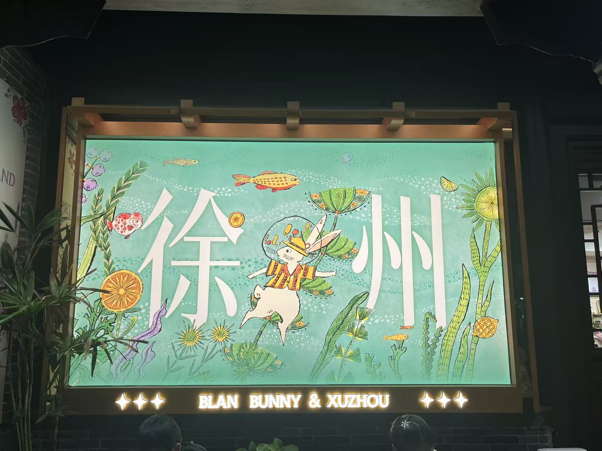
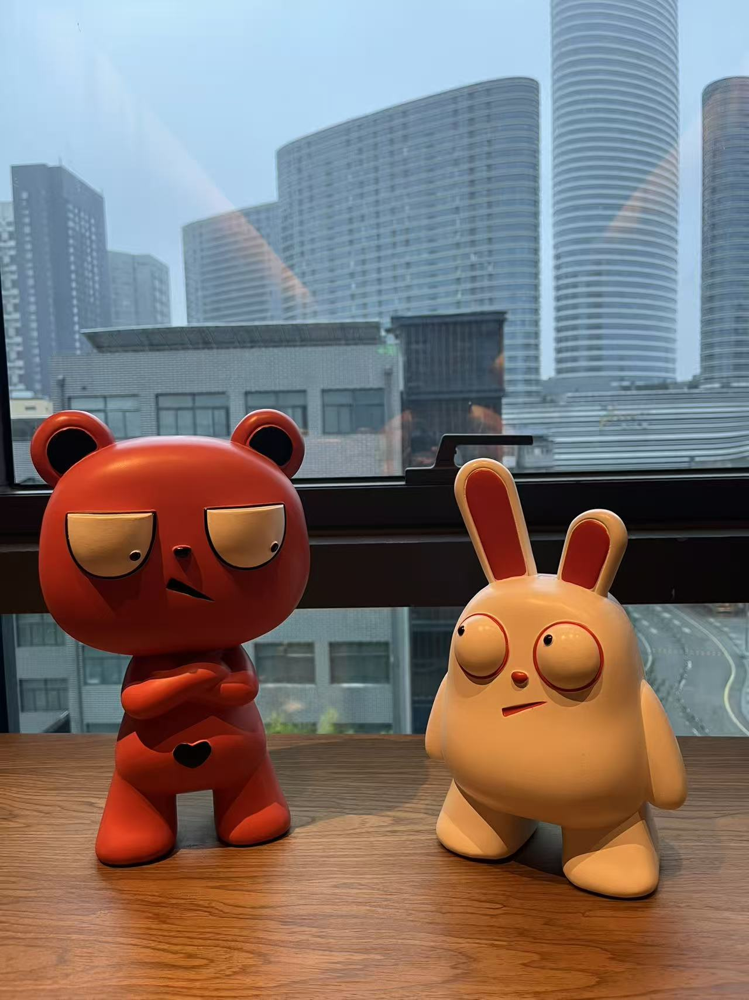
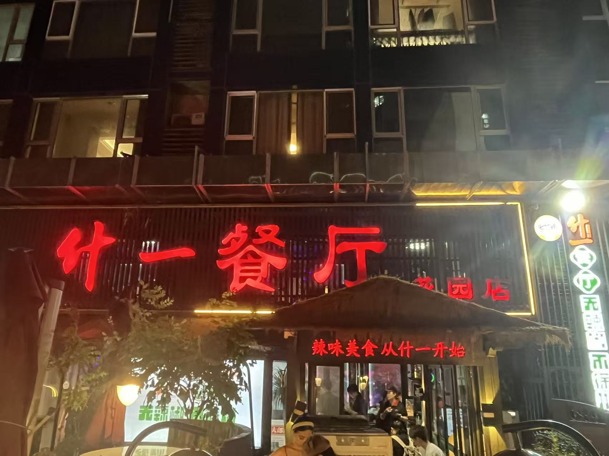
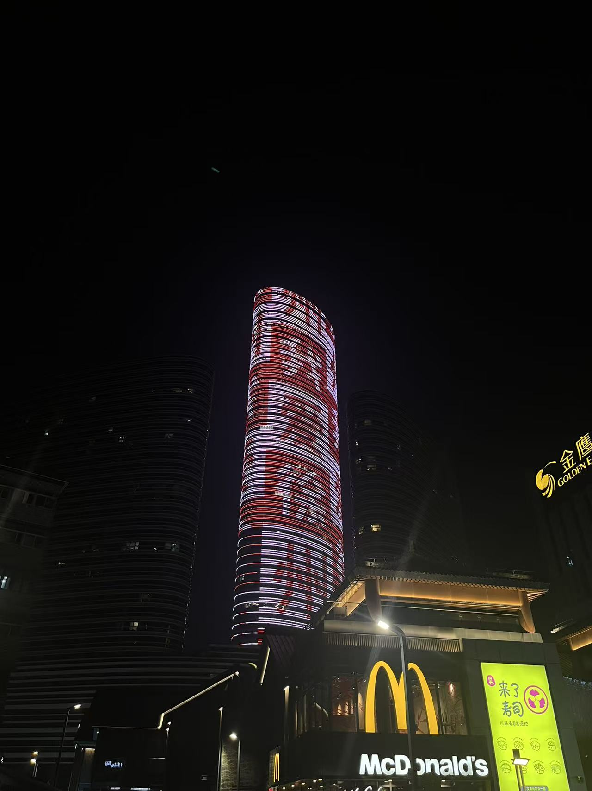
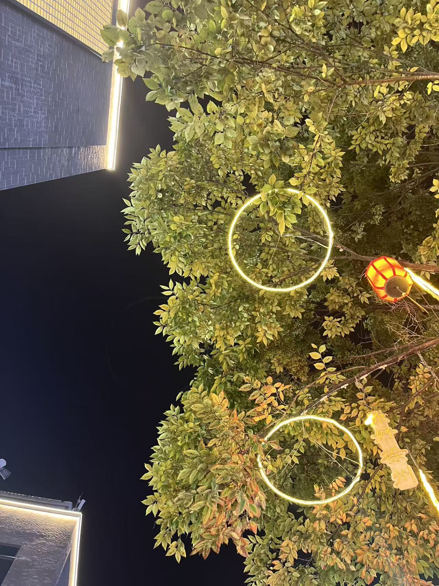
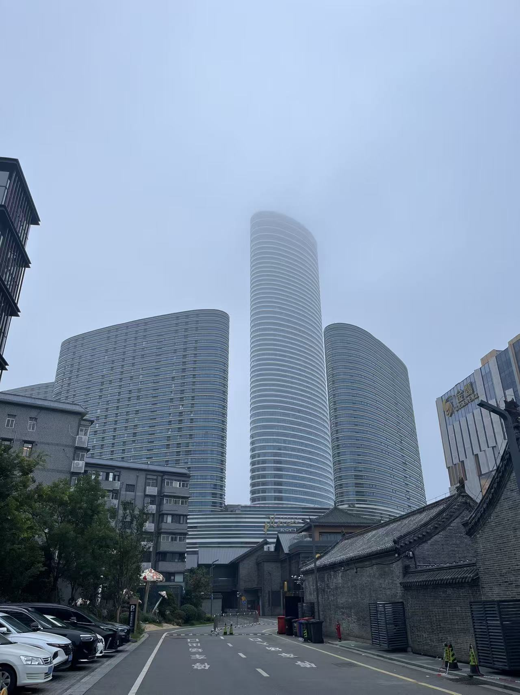
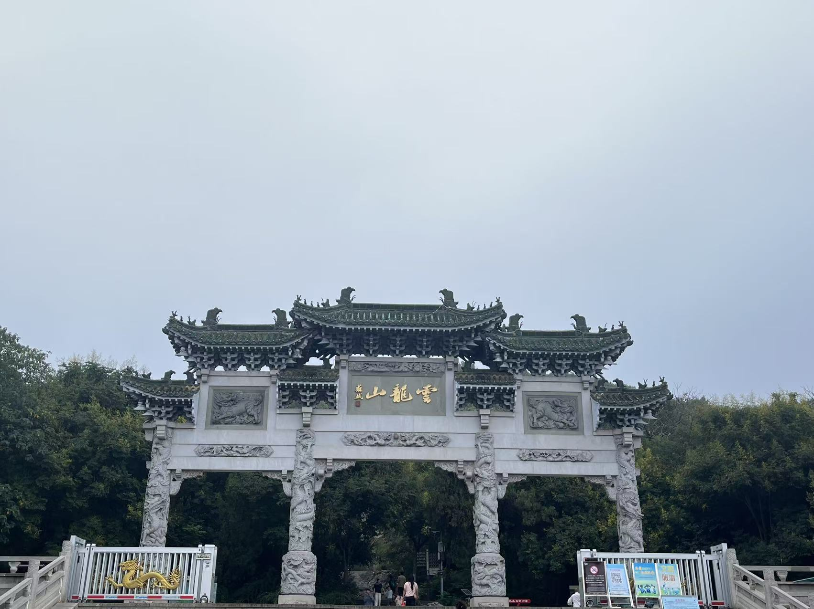
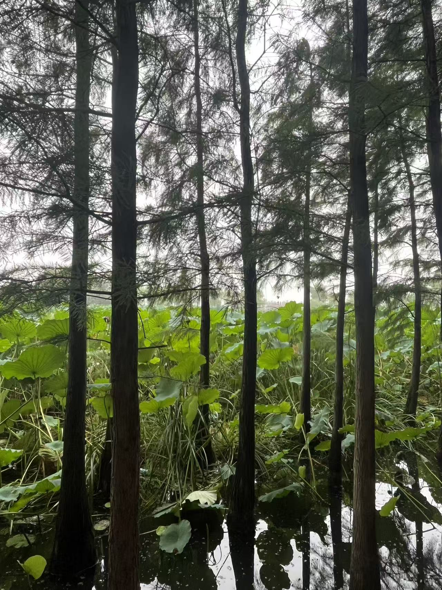
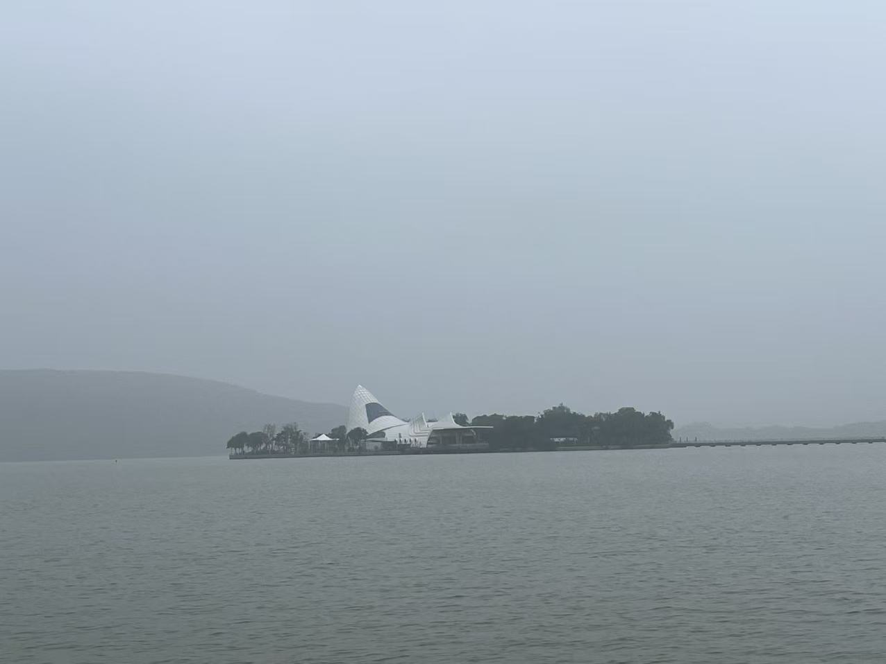
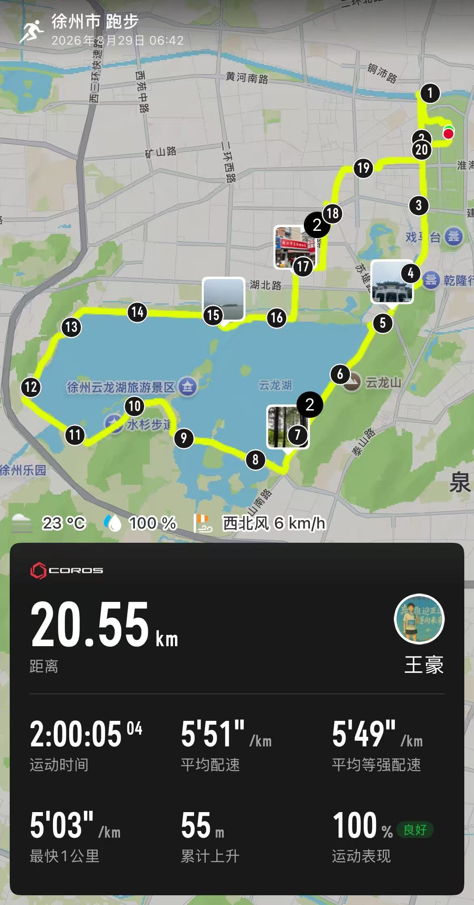

LIFE / XUZHOU
热爱生活
之徐州篇

周五下班，踩着暑假的尾巴，我们一家人开车出发去徐州。酒店是老婆订的逸扉，位置很好，楼下就是文庙、彭城广场和苏宁广场，妥妥的打卡拍照地。

一顿够辣的徐州晚饭
办理完入住，我们直奔老婆心心念念的什一餐厅——够破，也够老字号。

现在回想起来，只剩一个字：辣。徐州人真是无辣不欢。
拔丝地瓜、蒸菜、烧饼、水烙馍卷豆渣，还有有机蔬菜。蔬菜很好吃，其他菜在辣味的猛烈冲击下，反而没留下太深的印象。老婆最喜欢的是大席小炒，还是最爱萧县的味道。小时候的味觉记忆真牢啊。反过来想想自己，我竟然想不起有什么特别留恋的家乡美食。
上次在三亚，我第一次感受到松弛状态下喝酒的乐趣。夏天的晚上，怎么能不放松呢？一瓶啤酒下肚，舒舒服服地开始逛街。
雨后的彭城夜晚
刚下过雨，徐州的夜晚非常凉爽。街上好多小姐姐在拍照，我对着她们的镜头方向研究了半天，也没看明白她们到底在拍什么。

周围有很多美食街和商场。老婆和儿子最喜欢逛的就是各种“小破店”，家里也因此经常多出一堆小东西。果然，经过两个小时的闲逛，我们成功入手了五支笔、一个本子、一个儿童录音笔，以及买一送一的两个野人先生冰淇淋。

徐州人看起来很放松，街上好多人在唱歌，唱的还都是很久以前的老歌。这样看来，KTV里大概真的很少有零零后光顾了。老到什么程度呢？《还珠格格》的主题曲——“爱到心破碎，也别去怪谁……”哈哈，很难不跟着唱。
广场上有人喝多了，也不知道发生了什么。我儿子在旁边听了半天，愣是一句没听懂。不懂本地话，围观八卦的成本真高啊。
回到酒店已经十二点。儿子最近喜欢唱一首歌，一家人又在酒店里学了半天：“穿过旷野的风，你慢点走……”音乐真好啊。真正睡觉时，已经一点二十了。
一场随缘式晨跑
早上定了六点的闹钟，迷迷糊糊到六点四十才出门。今天的目标：随缘式跑步。
徐州当天空气不太好，前五公里一直沿着马路跑，路上不少地方还在施工，体验一般，就当 City Walk 了。本来计划沿黄河故道跑，后来发现不太舒服，晃着晃着又到了云龙湖。
这已经是第四次跑云龙湖了，但依然没有留下太清晰的路线记忆，只记得空旷的街道。




晨跑途中的音乐厅回酒店时又误入了一条坑坑洼洼的小破路，一路跑得慌慌张张。

辣汤、汤包，然后回家
回酒店快速冲了个澡，开始过早。辣汤加汤包，真是无敌绝配，吃完立刻开始晕碳。
早饭过后，我们便启程回老婆老家——陆裴庄。
徐州篇，先记录到这里。旅行未必要去很远，也不必安排得多么周密。一家人一起吃饭、逛街、唱歌，再随缘跑上一段路，已经足够让一个普通周末变得有滋有味。